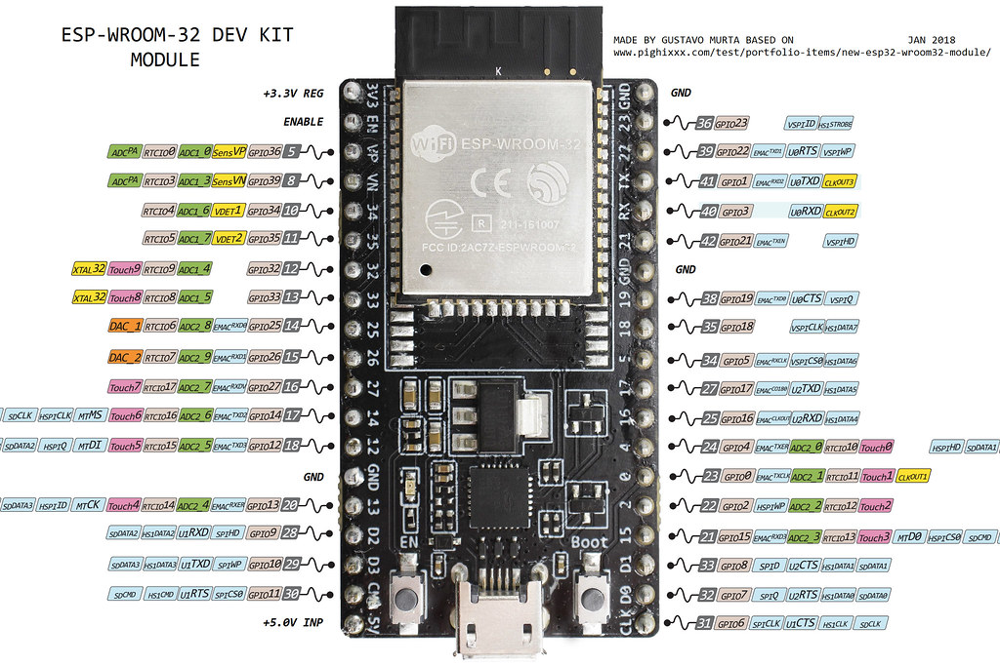

🔠ESP32#

ESP32 là một bộ vi điá»u khiển thuộc danh mục vi điá»u khiển trên chip công suất thấp và tiết kiệm chi phÃ. Hầu hết tất cả các biến thể ESP32 đều tÃch hợp Bluetooth và Wi-Fi chế độ kép, là m cho nó có tÃnh linh hoạt cao, mạnh mẽ và đáng tin cáºy cho nhiá»u ứng dụng.
Nó là sự kế thừa của vi điá»u khiển NodeMCU ESP8266 phổ biến và cung cấp hiệu suất và tÃnh năng tốt hơn. Bộ vi điá»u khiển ESP32 được sản xuất bởi Espressif Systems và được sá» dụng rộng rãi trong nhiá»u ứng dụng khác nhau như IoT, robot và tự động hóa.
ESP32 cũng được thiết kế để tiêu thụ điện năng thấp, lý tưởng cho các ứng dụng chạy bằng pin. Nó có hệ thống quản lý năng lượng cho phép nó hoạt động ở chế độ ngủ và chỉ thức dáºy khi cần thiết, điá»u nà y có thể kéo dà i tuổi thá» pin rất nhiá»u.
Với khả năng tÃch hợp nhiá»u chức năng trong một chip và khả năng kết nối mạng không dây, ESP32 mang lại nhiá»u lợi Ãch cho hệ thống tản nhiệt:
Thu tháºp dữ liệu từ cảm biến: ESP32 có thể được sá» dụng để kết nối với các cảm biến nhiệt độ, độ ẩm, áp suất và các cảm biến khác trong hệ thống tản nhiệt. Bằng cách nà y, nó có thể thu tháºp dữ liệu môi trường quan trá»ng để giám sát hiệu suất của hệ thống.
Giao tiếp không dây: Với tÃch hợp WiFi và Bluetooth, ESP32 cho phép truyá»n dữ liệu không dây giữa hệ thống tản nhiệt và các thiết bị khác như máy tÃnh hoặc điện thoại di động. Điá»u nà y cung cấp tÃnh linh hoạt cao và cho phép kiểm soát hệ thống từ xa.
TÃch hợp với Internet of Things (IoT): ESP32 có thể hoạt động như một nút trong mạng IoT, cho phép truyá»n dữ liệu đến các dịch vụ điện toán đám mây hoặc máy chủ để phân tÃch và láºp kế hoạch bảo trì cho hệ thống tản nhiệt. Điá»u nà y tạo điá»u kiện cho giám sát từ xa và quản lý thông minh của hệ thống.
Tiết kiệm năng lượng: ESP32 được thiết kế để tiêu thụ Ãt năng lượng, giúp tiết kiệm năng lượng trong hệ thống tản nhiệt. Điá»u nà y đặc biệt quan trá»ng trong các ứng dụng di động hoặc nơi không có nguồn điện liên tục.
Dễ dà ng tÃch hợp và phát triển: ESP32 có sẵn trong nhiá»u board phát triển khác nhau với hỗ trợ phần má»m mạnh mẽ từ cộng đồng phát triển. Điá»u nà y giúp tạo điá»u kiện cho việc phát triển nhanh chóng và tÃch hợp ESP32 và o hệ thống tản nhiệt một cách dễ dà ng.
Việc sá» dụng ESP32 trong hệ thống tản nhiệt mang lại nhiá»u lợi Ãch vá» thu tháºp dữ liệu, giao tiếp không dây, tÃch hợp với IoT, tiết kiệm năng lượng và dễ dà ng tÃch hợp và phát triển. Điá»u nà y giúp nâng cao hiệu suất và tÃnh linh hoạt của hệ thống tản nhiệt và tạo ra một giải pháp thông minh và hiệu quả.